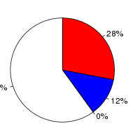
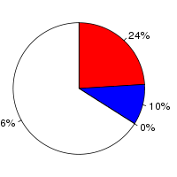

Amborella trichopoda (Amborella trichopoda, GCA_000471905.1) and Oryza sativa Japonica (Oryza sativa, IRGSP-1.0) were aligned using the Translated Blat alignment algorithm (Kent W, Genome Res., 2002;12(4):656-64) in Ensembl release 75. Amborella trichopoda was used as the reference species. After running Translated Blat, the raw Translated Blat alignment blocks are chained according to their location in both genomes. During the final netting process, the best sub-chain is chosen in each region on the reference species.
Full list of pairwise alignments| Minimum score (minScore) | 30 |
| Database type (t) | dnax |
| Query type (q) | dnax |
| Mask out repeats (mask) | lower |
| Mask out repeats on query (qmask) | lower |
| Amborella trichopoda | Oryza sativa Japonica | |
|---|---|---|
| Chunk size | 1,000,000 | 25,000 |
| Overlap | 10,000 | 10,000 |
| Group set size | 100,000,000 | 10,000,000 |
| Masking options | {default_soft_masking => 1} |
Number of alignment blocks: 256615
| Genome coverage(bp) | Coding exon coverage (bp) | |
|---|---|---|
| Amborella trichopoda |
|
 |
| 21,588,174 out of 706,332,640 | Matches: 7,192,380 out of 25,807,211 | |
| Uncovered: 684,744,466 out of 706,332,640 | Mis-matches: 3,007,568 out of 25,807,211 | |
| Insertions: 2,960 out of 25,807,211 | ||
| Uncovered: 15,604,303 out of 25,807,211 | ||
| Oryza sativa Japonica |
|
 |
| 14,996,994 out of 374,424,240 | Matches: 8,240,647 out of 34,124,807 | |
| Uncovered: 359,427,246 out of 374,424,240 | Mis-matches: 3,433,851 out of 34,124,807 | |
| Insertions: 3,682 out of 34,124,807 | ||
| Uncovered: 22,446,627 out of 34,124,807 |